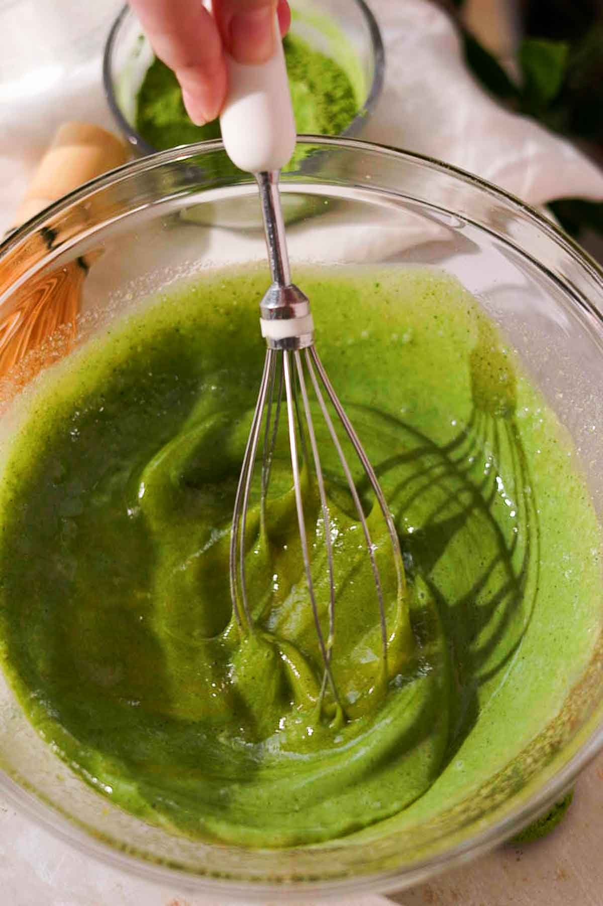

Matcha Tiramisu Recipe
This matcha tiramisu has layers of ultra creamy matcha filling and matcha soaked ladyfingers. It’s full of
matcha flavor! It has that perfectly creamy texture of traditional tiramisu, but doesn’t contain any coffee or
raw eggs. It’s the perfect make ahead cake if you love matcha, or want a delicious twist on a traditional
tiramisu.
Preparation Time:
45 Minutes
Cooking Time:
15 Minutes
Chill Time:
8 Hours
Total Time:
15 Minutes
Course:
Brunch, Dessert
Cruisine:
American, Italian, Japanese
Servings
12 People
Calories
487 kcal per serving
Equipment:
- 8x11" Non-Metal Oval Dish (or similar size)
- Electric Mixer
Ingredients:
Dietary Restrictions: Contains dairy, eggs, and gluten.
- 2 tablespoons matcha powder see notes, plus extra for dusting
- ¼ cup water boiling hot
- 1 cup milk
- 4 large egg yolks
- 2 large eggs
- ⅔ cup granulated sugar
- 1 teaspoon pure vanilla extract
- 1 lb mascarpone cheese
- 1 ½ cup heavy whipping cream
- 2 packages ladyfingers about 22 large ladyfingers, see notes
- 2 teaspoons matcha powder for dusting on top
Filling:
- Sift matcha into a medium bowl to break up any lumps. Add hot water to the matcha and whisk well using a
matcha whisk or regular wire whisk to combine until smooth. 2 tablespoons matcha powder,¼ cup water

- Add milk into the dissolved matcha and stir to combine. Set the matcha milk aside in the fridge.
1 cup milk
- Pour a few inches of water into a medium saucepan. Find a heat safe bowl that fits well on top of the pan
without touching the bottom or the water. Bring the water in the saucepan to a simmer.

- Combine yolks, eggs, sugar, vanilla, and ½ cup of the previously prepared matcha milk mixture in the heat
safe bowl. Whisk until combined.4 large egg yolks,2 large eggs,⅔ cup granulated sugar,1 teaspoon pure
vanilla extract

- Place the bowl on top of the saucepan and whisk. Continue whisking with a wire whisk until the mixture foams
up and thickens considerably. Remove from heat and let cool to room temperature.

- While the egg mixture cools, whip the heavy cream until medium-stiff peaks with a whisk or stand mixer. Be
careful not to overwhip or it will become grainy. Set aside in the fridge.1 ½ cup heavy whipping cream
- In a separate large bowl, add mascarpone cheese and whisk or beat briefly until smooth. Do not overmix or it
will become liquidy and won’t set. This is just done to remove any lumps. 1 lb mascarpone cheese
- Pour the thickened and cooled matcha filling into the mascarpone cheese and whisk or beat together very
briefly until combined, being careful not to overmix.

- Gently fold the whipped cream into the mascarpone mixture with a whisk until even and smooth.

Assembly:
- One by one, briefly dip
a ladyfinger in the reserved matcha milk mixture and place a single layer inside a
casserole dish. 2 packages ladyfingers

- Spread half of the
filling over the ladyfingers, smoothing the filling all the way to the edges. Dip more
ladyfingers in the tea, arranging them on top of the filling in a single layer. Add the rest of the filling
and smooth the top.
If you're running out of the matcha milk tea, add milk to stretch it. If you have any leftover, pour it into
a glass, add ice and extra milk, and enjoy your iced matcha tea latte.

- Cover and refrigerate for at
least 8 hours or overnight.
- The day of
serving, decorate by sifting some more matcha on top.
Optionally: To create a flower design, place cut out parchment paper flowers on top of the tiramisu before
dusting with matcha powder. Carefully remove the parchment paper flowers and pipe small dollops of yellow
whipped cream or frosting into the middle of each flower for the flower centers.
2 teaspoons matcha powder

- Scoop or slice and serve!
Additional Notes:
This matcha tiramisu will keep well in the fridge for up to four days. Freeze, wrapped tightly, for up to two
months. It keeps really well in the freezer and tastes like ice cream when frozen.
Ladyfingers: Depending on the dimensions of your baking dish, you may need more or less ladyfingers. I used two 5
oz packages of Milano giant ladyfingers. You can use your favorite vanilla cookies or sandwich cookies instead.
Matcha: Preferably use ceremonial grade matcha for a less bitter flavor and brighter color. Culinary will also
work, but it is more bitter and dull in color.
Helpful Tips:
- Use non-metal dishes for making matcha dessert. Metal gives matcha a metallic aftertaste.
- Don't overwhip the mascarpone. It needs an initial mix to smooth out any lumps but after that, mix gently.
If mascarpone is overmixed it will become liquidy and won't set.
- Whip the cream to stiff peaks and fold it into the filling very gently. This helps thicken the filling and
sets the tiramisu. It adds a lot of air into the tiramisu giving it a mousse-like texture. This tiramisu
uses whipped cream instead of raw whipped egg whites like traditional tiramisu does.
- Chill the tiramisu for 8 hours or overnight to set. This allows enough time for the ladyfingers to soak
through and soften up, and for the filling to set.
Website Research
Recipe Websites
Yummly
Yummly.com
Yummly has an extremely easy to use interface: there are many recipes, yet it doesn't feel cluttered. On the home
page you can easily navigate types of cruisines. As you scroll, the recipe grid provides alignment, presenting
all the important information cleanly and efficiently.
Delish
Delish.com
Delish presents itself as a great recipe website thanks to it's clean design and high-quality imagery. The page
is well laid out, with images being the primary focus. Every cell of new information, including ads, fit into
the visual layout of the website well; even as the user scrolls and interacts.
Food Network
FoodNetwork.com
Food Network is one of the most prominent recipe websites: they provide everything a food enthusiast may need
including insightful blog posts. Despite that, the website is easy to use and straightfoward with a theme-based
orientation.
Non-Recipe Websites
Jelly Cat
JellyCat.com
JellyCat's website is fun, playful, and simple to use. I would like to implement a similar playful theme without
losing the effectiveness of the website, like JellyCat's website delivers.
The Skimm
TheSkimm.com
The Skimm is my go-to news website because all the information is easy and entertaining to read. I hope to
utilize a siimlar communication technique, by designing the website so it's entertaining rather than havig it be
a chore to read.
Blueprint Coffee
BlueprintCoffee.com
Blueprint coffee's entire website is extremely on brand. Everything uses the same 2 fonts and the same blue
color, even the little icons of accepted credit cards are Blueprint blue. I hope to use this consistency in my
own website design.